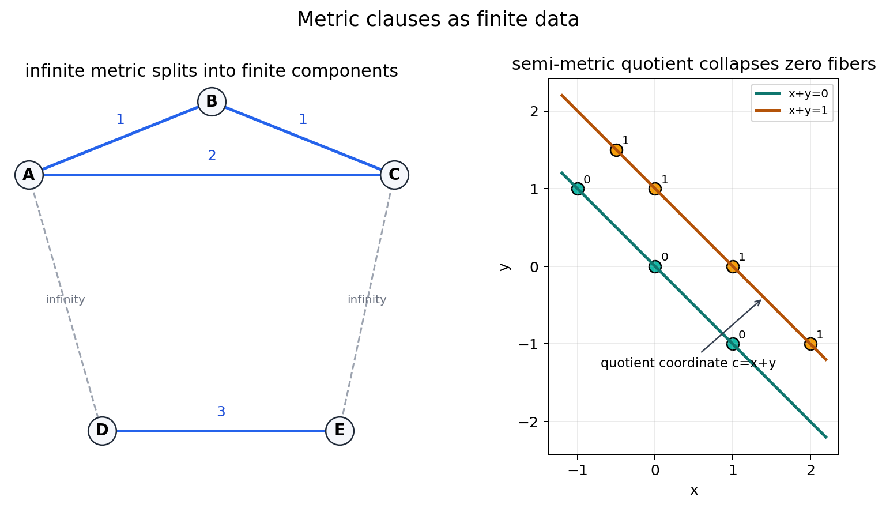
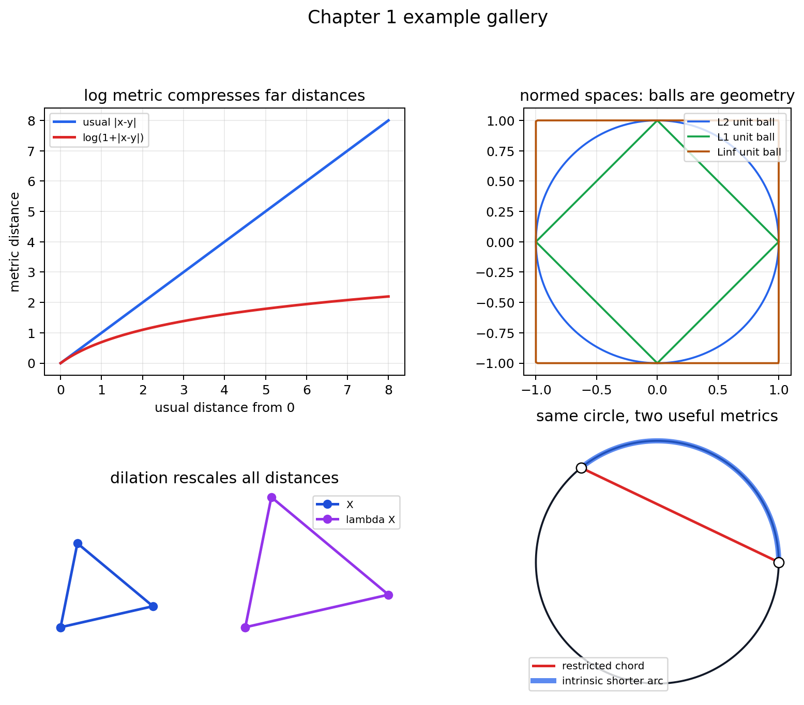
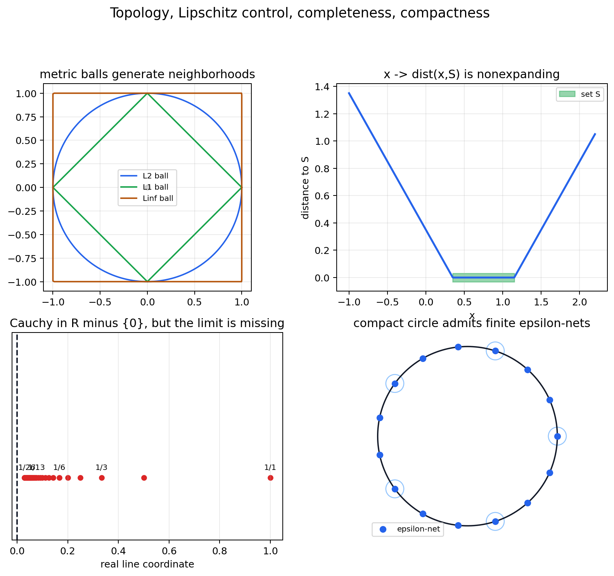
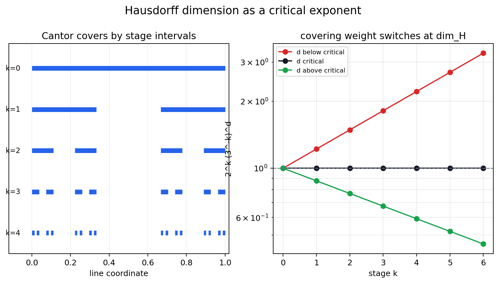

A chapter-specific lecture from A Course in Metric Geometry, Chapter 1.
Source grounding. Notebook: A-Course-in-Metric-Geometry/chapter-01-metric-spaces/01-metric-spaces.ipynb. Source span: printed pages 1-24; PDF pages 16-39. Source PDF: A-Course-in-Metric-Geometry/A Course in Metric Geometry.pdf.
What information is carried by distances alone?
A metric can be inspected as a matrix, a family of balls, a Lipschitz constant, a Cauchy tail, a finite net, or a scale-dependent cover.
| d | A | B | C | D |
|---|---|---|---|---|
| A | 0 | 1 | 2 | 4 |
| B | 1 | 0 | 1 | 3 |
| C | 2 | 1 | 0 | 2 |
| D | 4 | 3 | 2 | 0 |
Finite samples make each axiom inspectable before the abstract notation takes over.
Zero exactly on the diagonal, symmetric, and satisfying the triangle inequality.
Here \(4 \le 1 + 3\). The table passes this comparison with equality.

Define \(x \sim y\) when \(d(x,y) < \infty\). The metric axioms force this to be an equivalence relation.
Each class carries finite distances internally. Distances between classes are recorded as infinity.
A semi-metric may have \(d(x,y)=0\) even when \(x\ne y\).
Collapse every zero-distance fiber into one class. Then measure distances between classes.
The notebook checks that the quotient metric has no off-diagonal zero distances and satisfies the triangle inequality.

Far distances compress while nearby distances remain visible.
The unit ball is the geometric fingerprint of the norm.
Every distance scales by the same factor.
The same circle supports extrinsic and intrinsic distances.
The unit step for \(L^1\), \(L^2\), and \(L^\infty\) points in different directions.
On finite-dimensional spaces, constants compare the norms in both directions.
The companion lab varies \(p\) in the unit ball and records norm equivalence checks.
A set \(U\) is open when every point \(x\in U\) has a radius \(r>0\) with \(B(x,r)\subset U\).
Change the metric and the balls change. The topology may stay equivalent, become finer, or become coarser.

The distance-to-set function is nonexpanding: moving the input by \(h\) changes the output by at most \(h\).
For every \(\epsilon>0\), sufficiently late terms are within \(\epsilon\) of each other.
Every Cauchy sequence converges to a point in the same space.
Contractions generate Cauchy tails. Completeness supplies the landing point.
For each \(\epsilon>0\), finitely many \(\epsilon\)-balls cover the whole space.
The notebook's greedy separated set on the sampled circle is also an epsilon-net.
A distance-preserving map \(f:X\to X\) keeps separated sets separated. If \(X\) is compact, there is a maximum size for any \(\epsilon\)-separated set.
The exponent \(d\) determines whether small intervals become too cheap or still expensive.
Track whether the covering weight grows, stays level, or shrinks as \(k\) increases.

At the critical exponent, the stage weights stay constant. Below it, they grow; above it, they shrink.
Lipschitz images cannot increase Hausdorff dimension. Distance control has scale consequences.
Distance tables, infinite components, and quotient classes make the axioms inspectable.
The same set can carry different balls, paths, scales, and topology.
Lipschitz constants turn continuity into a quantitative statement.
Completeness says internally converging distance data lands in the space.
Finite nets see the whole space at every scale.
Hausdorff dimension records the exponent where covering weights switch behavior.
Next lecture. Length spaces ask what changes when distance is recovered from the lengths of paths.